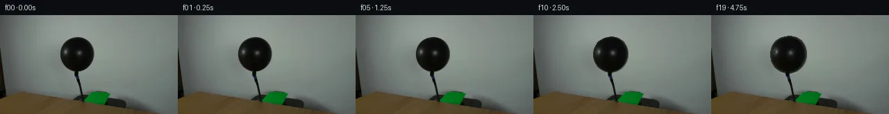

![首帧]()

Round 00
2026-11-05T09:09:16.633414+00:00像素候选变化代码 +213/−0inspection 更新
pixels a42a3813a47a8021 · code b56ba178e54102fd
查看本轮 generate.py 真实 diff
--- previous/generate.py
+++ current/generate.py
@@ -0,0 +1,213 @@
+#!/usr/bin/env python3
+"""generate.py - PixelWorld-Text frame generation for balloon inflation scene.
+
+Static locked-off single-shot. A black balloon inflates as air is pumped in.
+All non-balloon elements remain perfectly static.
+
+Method: Radial expansion of balloon pixels from balloon center using inverse
+mapping with bilinear interpolation. The balloon surface stretches outward
+while background, table, hose, and greenery remain fixed.
+"""
+
+import numpy as np
+from PIL import Image
+from pathlib import Path
+import sys
+
+# ── Paths ──────────────────────────────────────────────────────────────
+CASE_DIR = Path(__file__).resolve().parent
+FIRST_FRAME = CASE_DIR / "first_frame.png"
+TMP_DIR = CASE_DIR / ".tmp"
+FRAMES_DIR = CASE_DIR / "frames"
+N_FRAMES = 20
+W, H = 256, 144
+
+# ── Balloon parameters (measured from first_frame.png) ─────────────────
+# Balloon dark-pixel bounds: y=[32,80], x=[87,134], center ~(110.9, 56.5)
+BALLOON_CX = 111.0 # balloon center x
+BALLOON_CY = 56.5 # balloon center y
+BALLOON_Y0 = 30 # start of balloon influence region
+BALLOON_Y1 = 84 # end of balloon influence region
+BALLOON_X0 = 80 # start of balloon influence region
+BALLOON_X1 = 142 # end of balloon influence region
+
+# ── Scale factor schedule (smooth ease-in-out) ─────────────────────────
+# Balloon inflates from s=1.0 to s=1.12 over 20 frames
+def scale_factor(t):
+ """Smooth ease-in-out scale factor for frame t (0-19)."""
+ # Normalized time 0..1
+ tn = t / 19.0
+ # Ease-in-out using smoothstep
+ s = tn * tn * (3.0 - 2.0 * tn)
+ # Max growth 12%
+ return 1.0 + 0.12 * s
+
+
+def load_frame0():
+ """Load first_frame.png as numpy array."""
+ img = Image.open(FIRST_FRAME)
+ arr = np.array(img, dtype=np.float64)
+ assert arr.shape == (H, W, 3), f"Unexpected shape: {arr.shape}"
+ return arr
+
+
+def build_balloon_mask(arr):
+ """Build a soft balloon mask identifying balloon vs background.
+
+ The balloon is significantly darker than the background wall.
+ We use luminance thresholding with a smooth falloff.
+ """
+ lum = arr[:, :, 0] + arr[:, :, 1] + arr[:, :, 2] # sum of channels
+
+ # Background wall luminance is ~380-420 (RGB ~124-140 each)
+ # Balloon core is ~30-80, edges ~100-250
+ # Create mask: 1.0 = definitely balloon, 0.0 = definitely background
+
+ # Hard threshold for balloon core
+ hard_mask = (lum < 200).astype(np.float64)
+
+ # Soft transition zone
+ soft_mask = np.clip((250.0 - lum) / 100.0, 0.0, 1.0)
+
+ # Only consider the balloon region (ignore left-edge dark object)
+ region = np.zeros((H, W), dtype=np.float64)
+ region[BALLOON_Y0:BALLOON_Y1+1, BALLOON_X0:BALLOON_X1+1] = 1.0
+
+ mask = soft_mask * region
+ return mask
+
+
+def expand_balloon_frame(arr, mask, s):
+ """Create a new frame with balloon expanded by scale factor s.
+
+ Uses inverse mapping: for each output pixel in the balloon region,
+ compute the corresponding source pixel by scaling back toward center,
+ then sample with bilinear interpolation.
+
+ Args:
… diff truncated; 126 more lines …